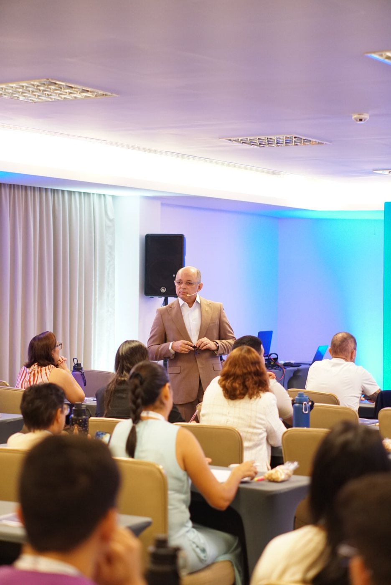

Crenças que recebeu dos seus pais e da sua história.
Método SER | Imersão presencial de 2 dias
Em 2 dias, descubra o que está paralisando sua vida, compreenda a raiz dos problemas que continuam se repetindo e ressignifique sua história. Em 2 dias, descubra a raiz que paralisa sua vida e ressignifique sua história.
Você será conduzido a confrontar os padrões, as feridas emocionais e os condicionamentos que continuam governando suas escolhas.
Uma experiência prática de transformação humana, fundamentada em princípios bíblicos e aplicada aos seus relacionamentos, às suas finanças, à sua saúde, à sua vida profissional e à sua espiritualidade.
Turma 13
15 e 16 de agosto
João Pessoa
Quero conhecer o Método SER
vagas limitadas
Data
15 e 16 de agosto
Horário
08h às 20h
Local
Hotel VerdeGreen
Identificação
Você muda as circunstâncias, mas os mesmos problemas continuam aparecendo?
Você trabalha mais para melhorar sua vida financeira.
Começa um novo relacionamento para deixar o anterior para trás.
Muda de emprego em busca de realização.
Cria novos hábitos e promete que, desta vez, será diferente.
Por algum tempo, parece que tudo mudou. Mas os mesmos sentimentos, conflitos e comportamentos voltam.
Isso acontece porque você muda o cenário, mas não confronta a raiz.
Os padrões, as feridas emocionais e os condicionamentos continuam governando suas escolhas, mesmo quando tudo ao seu redor parece novo.
O problema muda de nome. A raiz continua a mesma.
Quebra de crença
O problema visível pode ser apenas um sintoma
Uma dificuldade financeira pode não começar apenas na falta de organização. Um relacionamento frustrado pode não ser apenas consequência da pessoa errada.
A estagnação profissional pode não acontecer somente por falta de oportunidades. A dificuldade de cuidar do corpo pode não ser apenas falta de disciplina.
Por trás de cada resultado que se repete, pode existir uma raiz que você ainda não conseguiu identificar.
Talvez você esteja sendo influenciado por
Raízes invisíveis que governam escolhas visíveis.
Medo de decepcionar pessoas importantes e necessidade de aceitação.
Experiências que ainda determinam escolhas e reações.
Ciclos que se repetem de geração em geração.
Uma identidade construída para sobreviver, e não para viver plenamente.
Você não consegue transformar aquilo que ainda não conseguiu enxergar.

Apresentação do método
O que é o Método SER?
O Método SER é uma imersão presencial de dois dias criada para ajudar você a interromper o automático, compreender o que está por trás dos resultados que continuam se repetindo e iniciar um processo de ressignificação e reposicionamento.
Durante a experiência, você será conduzido a olhar com profundidade para sua história, suas crenças, suas decisões e para a forma como tudo isso influencia as áreas mais importantes da sua vida.
Não se trata de ouvir frases motivacionais ou sair animado por alguns dias. Trata-se de desenvolver consciência sobre aquilo que vem governando suas escolhas para começar a tomar decisões de uma nova forma.
Quero falar com a equipeMecanismo
O processo começa quando você aprende a SER
Reconhecer quem você se tornou, quais padrões estão presentes em sua vida e como eles afetam seus comportamentos, relacionamentos e decisões.
Compreender as crenças, experiências, feridas e condicionamentos que podem estar por trás dos resultados que continuam se repetindo.
Dar um novo significado à própria história e começar a tomar decisões mais conscientes, alinhadas com os seus valores, sua identidade e a vida que deseja construir.
Entenda a raiz. Ressignifique sua história. Reposicione sua vida.
Cinco pilares
Uma transformação que olha para você por inteiro
Sua vida não é formada por áreas completamente separadas. Aquilo que acontece dentro de você afeta seus relacionamentos, sua saúde emocional, sua carreira, suas decisões financeiras e sua espiritualidade.
Compreenda a conexão entre a criatura e o Criador e reflita sobre identidade, propósito, princípios e direção.
Identifique padrões presentes na relação com seus pais, filhos, cônjuge, amigos e consigo mesmo.
Perceba como emoções, comportamentos e experiências podem influenciar sua forma de cuidar do corpo e da mente.
Confronte a estagnação, o medo, a falta de direção e os caminhos profissionais que deixaram de fazer sentido.
Entenda como crenças, emoções e padrões de comportamento podem influenciar sua relação com o dinheiro e a prosperidade.
A pergunta não é apenas como estão essas áreas. A pergunta é: quem você tem sido dentro de cada uma delas?
Transformação
O que pode começar a mudar quando você desenvolve consciência?
Ressignificar sua história não significa apagar o que aconteceu. Significa impedir que aquilo que aconteceu continue tomando todas as decisões por você.
Compreender por que determinados problemas continuam se repetindo.
Identificar comportamentos que sabotam seus resultados.
Enxergar sua história a partir de uma nova perspectiva.
Tomar decisões que vinham sendo adiadas.
Se posicionar de forma diferente nos seus relacionamentos.
Recuperar direção na vida profissional.
Rever sua relação com dinheiro e prosperidade.
Se reconectar com sua espiritualidade.
Iniciar uma nova forma de conduzir a própria vida.
Clareza sobre o que precisa ser transformado.
Provas
Histórias que começaram a mudar quando a raiz foi confrontada
Um pai chegou ao Método SER sem conseguir manter uma relação saudável com o filho de 14 anos. Na noite do primeiro dia, voltou para casa, chamou o filho para conversar, pediu perdão e iniciou uma reconciliação que sua família desejava havia anos.
Durante anos, um participante permaneceu no serviço público porque aprendeu com sua família que aquele era o único caminho seguro. Depois de confrontar crenças que influenciavam suas decisões, pediu demissão e iniciou seu próprio negócio de consultoria.
Um participante percebeu durante a imersão que não conseguiria construir a vida próspera que desejava enquanto permanecesse desconectado de Deus. A experiência marcou o início de uma nova jornada espiritual.
Depois de enfrentar um período marcado por ansiedade e falta de cuidado consigo mesma, uma participante iniciou um novo processo de transformação. Nos meses seguintes, passou a cuidar da saúde, mudou comportamentos e eliminou 17 quilos.
Diferencial
Não é apenas conhecimento. É um encontro com aquilo que você ainda não conseguiu enxergar.
Durante dois dias, você será conduzido por conteúdos, experiências, ferramentas e exercícios que ajudam a conectar aquilo que você vive hoje com as raízes que podem estar por trás desses resultados.
Você não participa apenas para aprender algo novo, mas para aplicar o que descobriu à própria vida.
Uma experiência feita para ser vivida, não apenas assistida.
Base bíblica
Ciência, inteligência emocional e princípios bíblicos aplicados à vida real
O Método SER combina conhecimentos e reflexões relacionados à inteligência emocional, psicologia, filosofia, comportamento humano, desenvolvimento pessoal e princípios bíblicos.
A Bíblia faz parte da base da imersão e isso é apresentado com transparência desde o início. Não acreditamos que seja possível falar plenamente sobre identidade, propósito e mente sem considerar o Criador.
Ao mesmo tempo, o Método SER não é um culto, missa ou uma experiência restrita a líderes e membros de igrejas. É uma imersão de transformação humana fundamentada em princípios bíblicos e aplicada aos desafios reais da vida.
Para quem é
O Método SER é para você que:
Percebe que está repetindo os mesmos desafios em diferentes áreas.
Sente que possui capacidade, mas continua paralisado.
Vive conflitos familiares ou conjugais que não consegue resolver.
Trabalha muito, mas não experimenta prosperidade.
Está insatisfeito profissionalmente e não encontra direção.
Reconhece que precisa cuidar melhor da saúde física e emocional.
Deseja compreender melhor sua identidade e propósito.
Sente que se afastou de Deus e de quem acredita que deveria ser.
Está disposto a olhar para a própria história com sinceridade.
Para quem não é
O Método SER não é para quem:
Procura apenas uma experiência motivacional.
Deseja uma solução mágica sem assumir responsabilidade.
Não está disposto a refletir sobre os próprios comportamentos.
Acredita que todos os seus problemas são culpa das outras pessoas.
Não aceita uma abordagem fundamentada em princípios bíblicos.
Espera que dois dias substituam todo processo terapêutico, médico ou acompanhamento profissional necessário.
O Método SER não substitui psicoterapia, acompanhamento médico ou qualquer tratamento realizado por profissionais de saúde.
Sobre Geraldo
Quem conduzirá você nessa experiência
Geraldo é fundador do Método SER e atua com desenvolvimento humano, inteligência emocional e transformação de vida.
Sua abordagem une estudos sobre comportamento, psicologia, filosofia, inteligência emocional e princípios bíblicos.
Por meio de uma comunicação direta, profunda e aplicada à realidade, Geraldo ajuda pessoas a identificarem os padrões que influenciam suas decisões e a se reposicionarem nos pilares fundamentais da vida.
Mais do que transmitir conhecimento, seu trabalho é criar um ambiente de consciência, confrontação e direção.
“Você não precisa de mais força para mudar. Precisa descobrir o que ainda governa sua vida.”
Bastidores
Uma imersão vivida de perto.
Próxima turma
Próxima imersão Método SER
As vagas são limitadas para preservar a qualidade da experiência e o acompanhamento dos participantes.
- Data
- 15 e 16 de agosto
- Horário
- 08h às 20h
- Cidade
- João Pessoa
- Local
- Hotel VerdeGreen
- Formato
- Imersão presencial de dois dias
- Investimento
- R$ 997,00 à vista ou 12x R$ 99,70
Para conhecer os detalhes da próxima turma, clique no botão abaixo e converse com nossa equipe pelo WhatsApp.
Quero receber as informaçõesVocê será direcionado para o WhatsApp.
Perguntas frequentes
Perguntas importantes
O que é o Método SER?
É uma imersão presencial de dois dias voltada à identificação, compreensão e ressignificação de padrões que influenciam diferentes áreas da vida.
O Método SER é um evento religioso?
Não. O Método SER utiliza princípios bíblicos como parte de sua base, juntamente com conteúdos relacionados à inteligência emocional, psicologia, filosofia e comportamento humano. Não é culto, nem missa, mas a abordagem espiritual e bíblica é apresentada com clareza.
Preciso ser cristão para participar?
Não é necessário pertencer a uma igreja ou denominação específica. No entanto, é importante estar aberto a uma experiência fundamentada também em princípios bíblicos.
Tudo será resolvido em dois dias?
Não. Algumas pessoas tomam decisões e vivem mudanças importantes durante a própria imersão. Outras identificam questões que precisam de um processo de continuidade. O objetivo é gerar consciência, clareza, ressignificação e direção para que uma transformação consistente possa começar.
O Método SER substitui terapia?
Não. O Método SER é uma imersão de desenvolvimento humano e não substitui acompanhamento psicológico, psiquiátrico, médico ou qualquer tratamento profissional necessário.
Posso participar mesmo sem estar vivendo uma crise?
Sim. Você não precisa esperar a vida entrar em colapso para desenvolver consciência, rever seus padrões e se reposicionar.
Como descubro o valor e as condições?
O investimento atual é de R$ 997,00 à vista ou 12x R$ 99,70. Clique em um dos botões da página e converse com nossa equipe pelo WhatsApp para confirmar disponibilidade da próxima turma.
Quantas vezes você ainda pretende mudar as circunstâncias sem confrontar aquilo que continua produzindo os mesmos resultados?
Você pode continuar tentando resolver cada problema de forma isolada. Pode mudar de relacionamento. Mudar de trabalho. Buscar mais dinheiro. Criar uma nova rotina. Começar novamente.
Mas, enquanto a raiz continuar intacta, os mesmos padrões podem continuar acompanhando você.
Talvez o próximo passo não seja tentar com mais força. Talvez seja parar, se enxergar e compreender o que ainda governa sua vida.
Entenda a raiz.
Ressignifique sua história.
Reposicione sua vida.
15 e 16 de agosto — João Pessoa
Quero participar da próxima turmaClique para conversar com nossa equipe pelo WhatsApp.